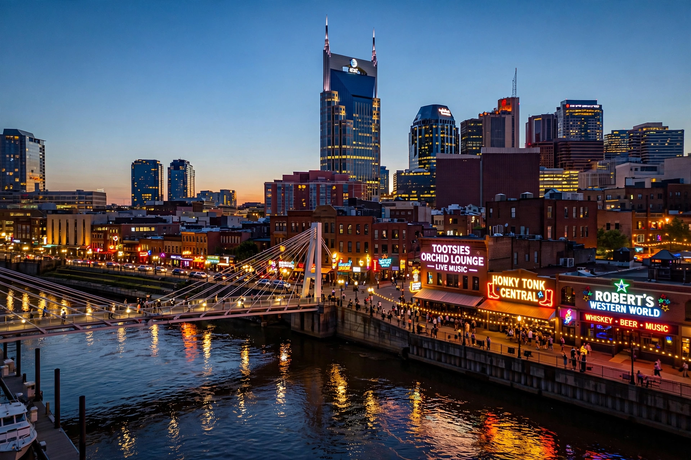

Wikipedia — The Free Encyclopedia

Nashville is the capital and most populous city of the U.S. state of Tennessee, and the seat of Davidson County. Since 1963 it has had a consolidated city-county government. Located on the Cumberland River in north-central Tennessee, Nashville is a centre for the music, healthcare, publishing, banking and transportation industries, and is home to numerous colleges and universities, including Vanderbilt University.
The city was founded in 1779 as Fort Nashborough, named for the Revolutionary War general Francis Nash, and incorporated in 1806. It grew as a river port and railroad hub, became Tennessee's permanent capital in 1843, and was the first Confederate state capital to fall to Union forces in 1862. After the Civil War it regained its prosperity as a trading and manufacturing centre.
Nashville is known worldwide as "Music City". The Grand Ole Opry radio show, broadcasting since 1925, made it the capital of country music; the recording studios of Music Row, the Ryman Auditorium and the Country Music Hall of Fame and Museum followed. The full-scale replica of the Parthenon in Centennial Park also earns Nashville the nickname "Athens of the South", reflecting its many educational institutions.
The city has a humid subtropical climate and a population of roughly 690,000 (about 1.3 million in the urban area and over 2 million in the metropolitan area). Healthcare is the largest industry, followed by music production, higher education and tourism, which draws visitors to Broadway's honky-tonks and the annual CMA Music Festival. Professional teams include the Tennessee Titans (NFL) and Nashville Predators (NHL).